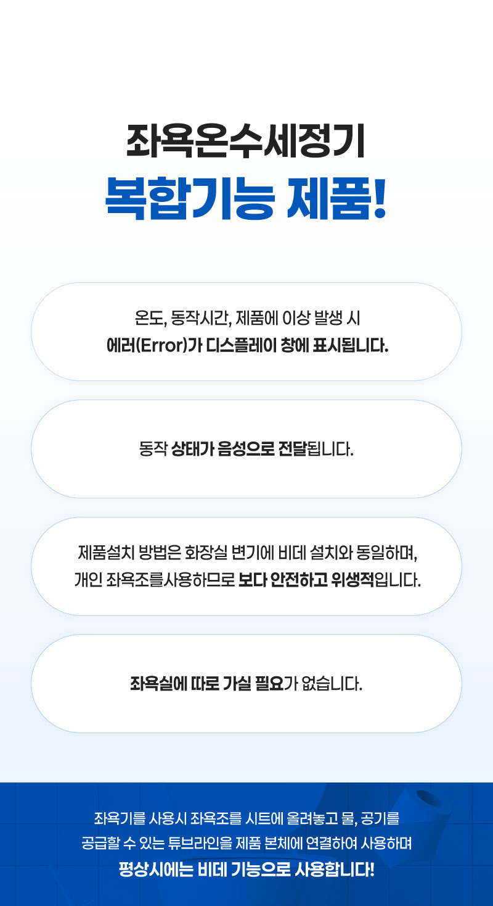
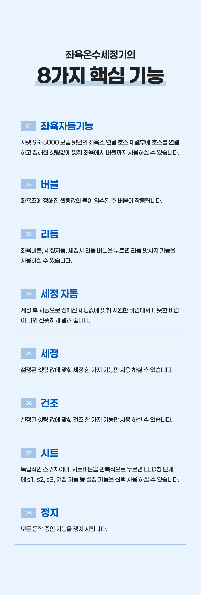
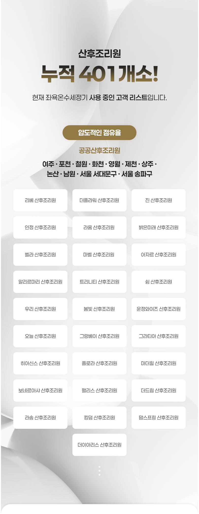
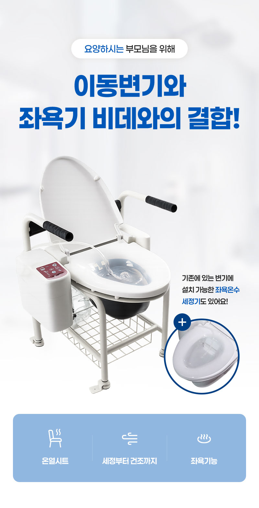
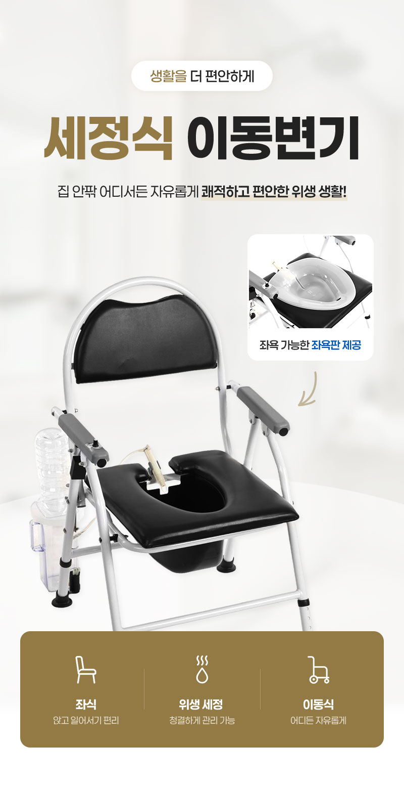

좌욕온수 세정기
보원테크(BOWON TECH)의 산모 및 환자 전용 자동 살균 온수 좌욕·세정 시스템을 공급합니다.
보원테크 (BOWON TECH) 공식 대리점
준메디칼은 2012년부터 보원테크 대전·충청 공식 대리점으로서 산부인과 병의원, 산후조리원, 전문 요양시설에 정품 장비 공급 및 철저한 설치·유지보수를 전담하고 있습니다.
산모와 환자를 위한 3-in-1 메디컬 케어
온수세정(비데), 공기방울 온수좌욕, 원적외선 온풍건조까지 단 하나의 기기로 완벽한 위생과 회복을 제공합니다.

공기방울 온수좌욕
풍부한 미세 공기방울 수류가 환부에 부드러운 자극을 주어 분만 후 회음부 회복 및 항문 혈액순환을 촉진하고 통증을 신속히 완화합니다.

정밀 저자극 온수세정
민감한 수술 부위와 산모의 피부를 고려한 수압·수온 정밀 제어 시스템으로 자극 없는 청결 세정을 실현합니다.

원적외선 온풍건조
세정 및 좌욕 후 잔여 습기를 원적외선과 따뜻한 온풍으로 쾌적하게 건조시켜 2차 감염 예방과 빠른 상처 치유를 돕습니다.
보원테크 제품 라인업
병원 및 산후조리원 환경에 최적화된 고정식, 이동식, 케어식 맞춤형 모델을 제공합니다.

산모 전용 좌욕·온수세정기
Hospital & Care Center Integrated Model산부인과 병실 및 산후조리원 전용 모델로 급배수 배관 직결을 통해 24시간 편리하고 쾌적한 좌욕 치료를 제공합니다.
- 공기방울 온수좌욕 + 온수세정 + 온풍건조
- 위생적인 풀 스테인리스 분사 노즐
- 사용 전후 자동 노즐 살균 세척 기능

이동형 온수 좌욕기
Mobile Patient Sitz Bath System거동이 불편한 중환자 및 수술 환자를 위해 병실 침상 바로 옆까지 이동하여 좌욕 치료가 가능한 바퀴형 모바일 시스템입니다.
- 내장형 청수 및 오수 탱크 장착
- 부드러운 저소음 우레탄 바퀴 & 잠금장치
- 직관적인 디지털 컨트롤 패널 탑재

환자 케어형 온수 비데
Specialized Medical Care Bidet기존 양변기에 손쉽게 설치 가능한 의료 케어 특화 비데로 항문외과 및 일반 병동의 위생 관리에 탁월합니다.
- 광폭 온수 분사 및 무자극 수류 제어
- 항균 시트 및 방수 등급(IPX) 설계
- 간병인의 보조 편의성 극대화
철저한 감염 예방과 위생 설계
병원 감염 관리 지침을 충족하는 최고 등급의 위생 자재와 다중 안전 설계를 적용했습니다.
풀 스테인리스 노즐
이물질 부착과 변색에 강한 풀 스테인리스 노즐을 적용하여 세균 번식을 억제하며 반영구적 위생 상태를 유지합니다.
사용 전후 자동 세척
사용 전과 후에 노즐 스스로 고압수를 분사하여 노즐 표면과 분사구를 완벽하게 자동 살균 세척합니다.
다중 안전 센서 시스템
온도 과승 방지 바이메탈, 누전 감지 자동 차단기, 수위 감지 센서를 탑재하여 24시간 안전한 작동을 보장합니다.
| 정격 전압 | AC 220V, 60Hz |
|---|---|
| 소비 전력 | 최대 1,200W (순간 온수 가열 시) |
| 급수 방식 | 고정식: 수도 직결식 / 이동식: 내장 청수탱크 보충식 |
| 수온 제어 | 32℃ ~ 40℃ (5단계 정밀 조절) |
| 주요 기능 | 공기방울 온수좌욕, 온수세정, 비데, 원적외선 온풍건조, 노즐 자동세척, 절전모드 |
| 적용처 | 산부인과 병의원, 산후조리원, 여성외과클리닉, 대장항문병원, 요양병원, 종합병원 병동 |